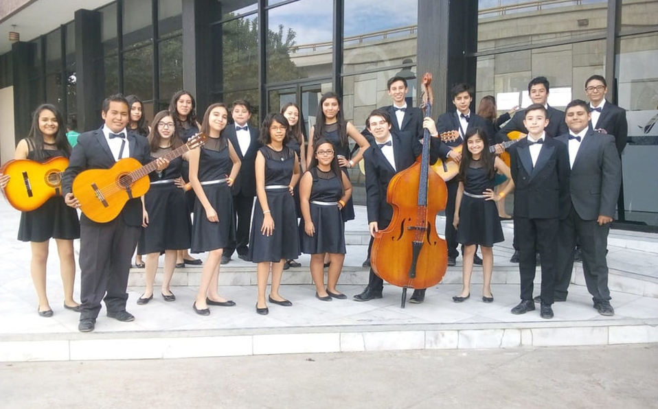

La música de rondalla o en agrupaciones de tres, coloquialmente “TRÍOS”, toca música romántica en potencia, pues para esto es la expresión humana, este genero nace la derivación de los sones cubanos, o “BOLEROS”, CABE RECALCAR QUE ESTA ES TOCADA POR INSTRUMENTOS DE CUERDA, CON PUNTEOS Y RITMOS VARIADOS.
Rondalla Mexicana. Conjunto musical propio de México conformado exclusivamente por guitarras, requintos y, generalmente, un sólo contrabajo. Puede integrarse por hombres, mujeres o ambos, sin límites de edad siendo, por lo regular, entre 8 y 20 las personas que lo comprenden.
Originalmente cuentan con un repertorio romántico, aunque en la actualidad interpretan todo tipo de melodías y ritmos. Su repertorio se basa en interpretaciones de temas de otros artistas o grupos, no obstante, algunos grupos también cuentan con composiciones propias. Son grupos que usan la polifonía como recurso, dada la cantidad de sus integrantes.
Su vestimenta, completamente formal, comprende principalmente el smooking para los hombres y el traje sastre o vestido para las mujeres, sin embargo, recientemente se han dado variantes novedosas.
